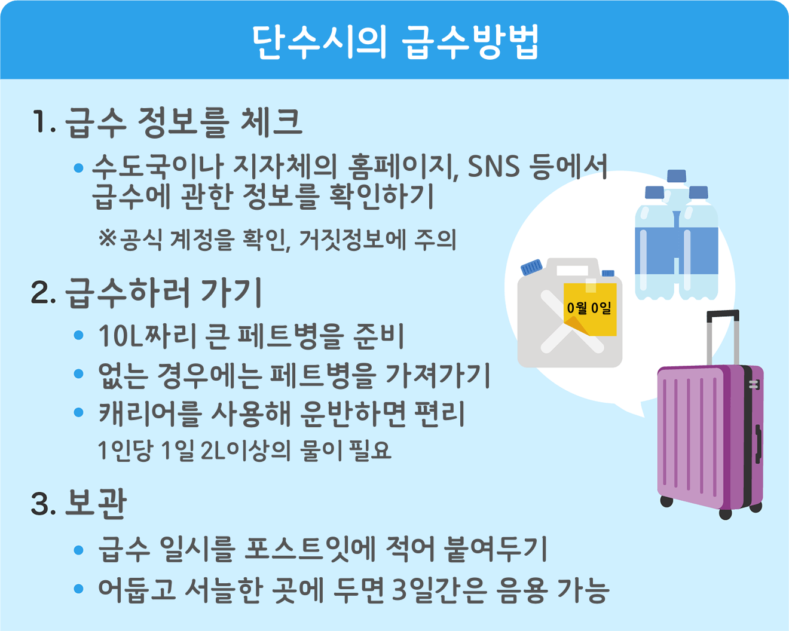

수해를 입으면
대피 정보가 나와 있는 상황에서는 안전한 장소에 머물러 주세요. 피해를 입은 집의 정리와 기록 등은 위험이 사라지고 안전이 확보된 후 실시해 주세요.
정리 할 때의 위생대책과 소독
수해에서는 집에 하수도 같은 오수가 흘러들어가 세균이나 곰팡이로 인한 감염병이 발생할 위험성도 있습니다. 재해 후에 조심해야 할 것을 확인합시다.
여름철 대피소에서는 열사병에 주의(특히 어린이나 노인).
갈증을 느끼지 않아도 수시로 수분과 염분을 보충하고 통기성이 좋은 옷을 착용하여 더위를 피합시다.
자동차 피해
침수 피해를 입은 자동차의 대처 방법
물에 잠긴 차량은 외관상 문제가 없어 보여도 감전 사고와 합선 등에 의한 차량 화재가 발생할 우려가 있습니다.
1. 시동 걸지 않기.
2. 사용해야 하는 경우에는 구입한 판매점, 또는 가까운 정비소에서 상담하기. 특히 하이브리드차(HV)나 전기차(EV)는 고전압 배터리가 탑재되어 있으니 절대 함부로 만지지 마세요.
3. 또한, 배터리가 발화할 우려가 있으므로 자동차 배터리의 -(마이너스) 쪽의 터미널을 분리하세요.
열사병 대책
정전으로 에어컨이나 선풍기를 사용할 수 없는 상황에서는 열사병에 주의합시다. 가능한 통풍이 잘 되는 그늘에서 지내고 수시로 수분을 보충해 주시기 바랍니다. 경구 수분 보충액 등도 상비해 두는 것이 좋습니다. 특히 고령자 등은 열사병에 주의하시기 바랍니다.
단수 대책
